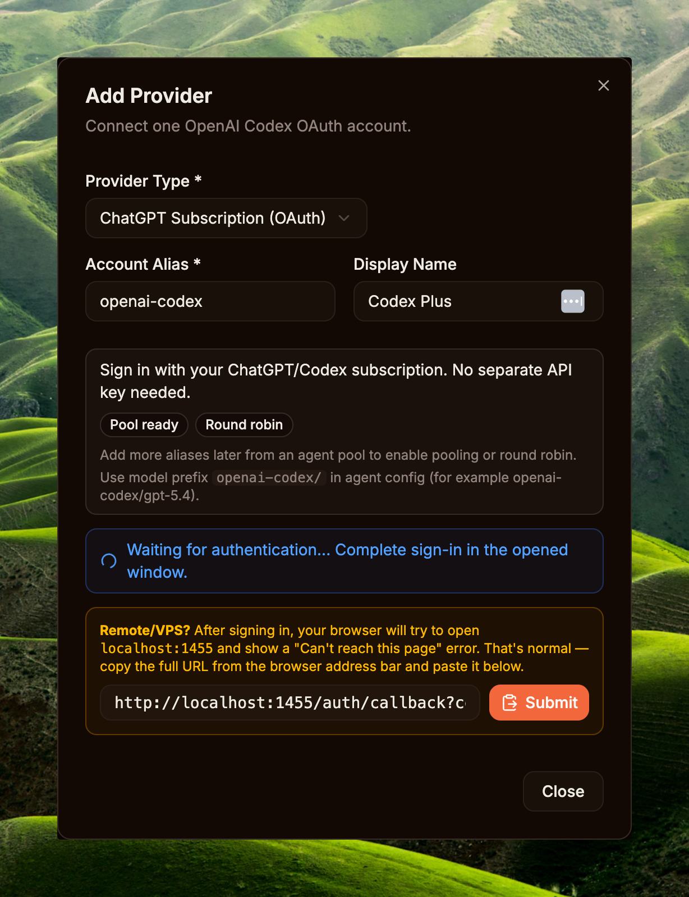
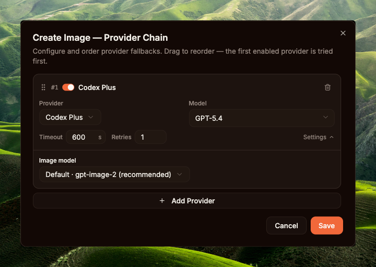
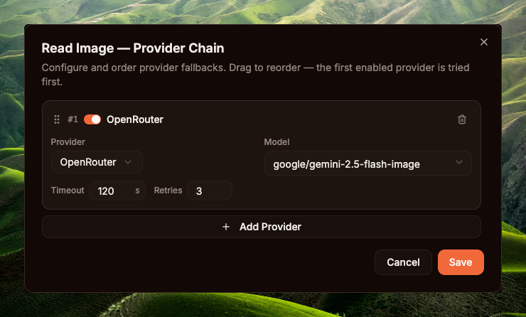
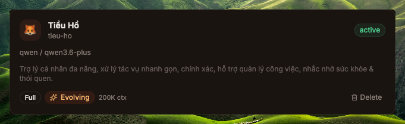
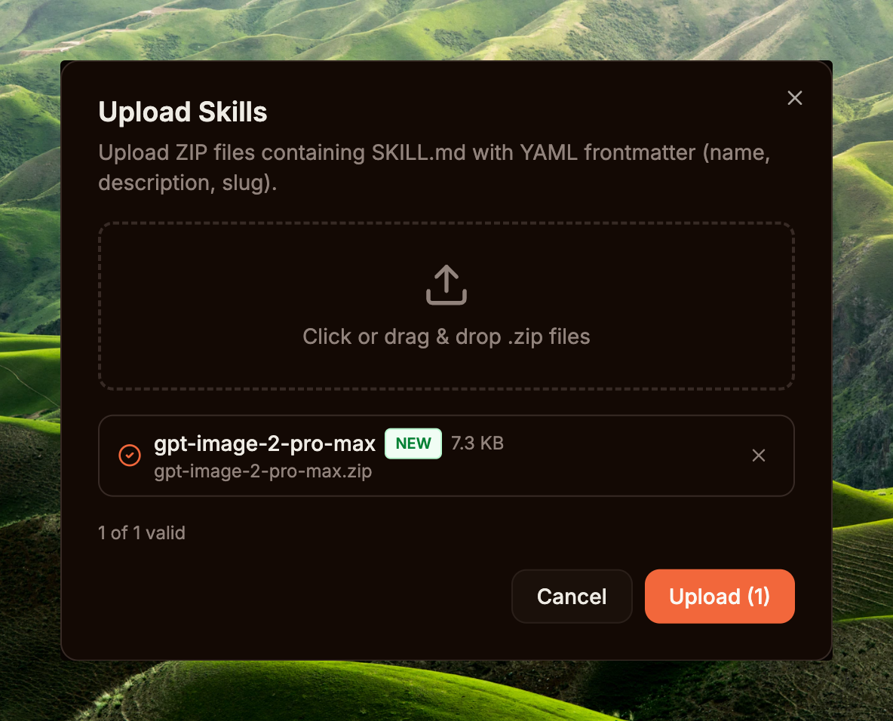
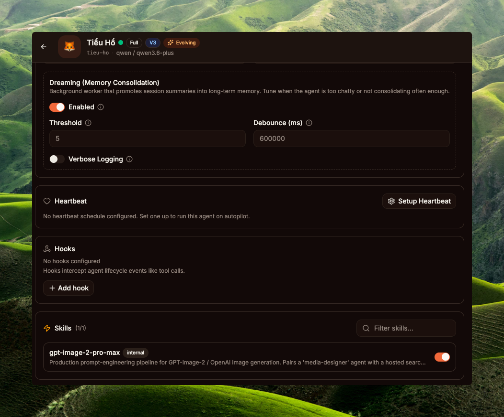
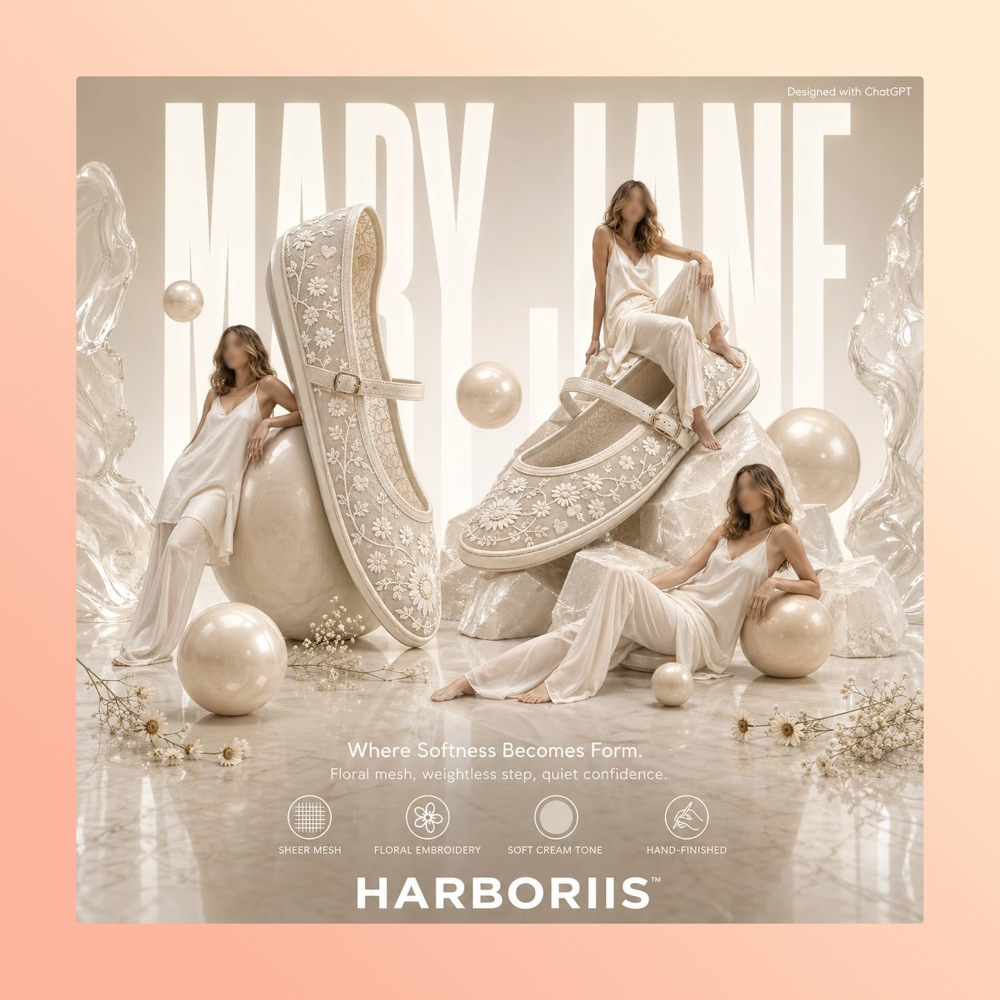

ChatGPT subscription (Plus / Pro / Team / Enterprise) đã có gpt-image-2 trong quota — gói Plus có hạn mức thoải mái, gói Pro có hạn mức cao nhất kèm ưu tiên xử lý.
PR #1002 nối tool create_image của GoClaw vào native pipeline qua Codex OAuth. Codex ở đây là OAuth flow GoClaw dùng để gọi OpenAI Responses API mà không cần API key.
Skill gpt-image-2-pro-max do Richard Ng — contributor của GoClaw — open-source, code license MIT, package theo chuẩn Claude Code Skill và tương thích với Skill system của GoClaw. Chỉ cần zip thư mục skill rồi upload qua Dashboard là agent dùng được. Corpus 3,000+ prompt template thuộc creators trên Twitter/X; skill chỉ index lại để search nhanh hơn. Ghép PR #1002 với skill này, agent có thể đọc skill, tự brainstorm prompt rồi gọi create_image ra ảnh poster qua quota subscription ChatGPT, không tốn cost theo đường API Usage.
create_image cũ chỉ chạy được với API keyTrước PR #1002, tool create_image trong GoClaw tìm provider thông qua credentialProvider interface — tức provider phải có 2 method APIKey() string và APIBase() string. CodexProvider dùng OAuth flow nên cố ý không implement 2 method này: token được rotate qua refresh_token grant (xem internal/oauth/token.go), còn backend URL default https://chatgpt.com/backend-api (constant DefaultProviderAPIBase) chỉ dùng nội bộ — không nằm trong credential surface mà tool layer được phép đụng.
Hệ quả: subscription ChatGPT Plus/Pro có gpt-image-2 trong quota — gọi được trên web chatgpt.com/images, gọi được trong Codex CLI, nhưng agent của GoClaw không gọi được vì tool create_image bị chặn ở bước kiểm tra APIKey()/APIBase(). User phải đi đường API key song song. Path phổ biến là Gemini Nano Banana 2 qua OpenRouter vì:
Chain mặc định imageGenModelDefaults của GoClaw ánh xạ mỗi provider sang 1 model: openai → gpt-image-1.5, openrouter → google/gemini-2.5-flash-image (Nano Banana 2), gemini → gemini-2.5-flash-image, minimax → image-01, dashscope → wan2.6-image, byteplus → seedream-5-0-260128. Thứ tự ưu tiên provider là openrouter → gemini → openai → minimax → dashscope → byteplus. Tất cả đều cần API key tương ứng.
Vấn đề: user đã trả ChatGPT Plus/Pro hằng tháng cho coding workflow, gpt-image-2 là một trong các model tạo ảnh chất lượng cao — nhưng quota đó nằm yên, không xài được trong agent.
| Trước PR #1002 | Sau PR #1002 |
|---|---|
Path duy nhất: API key (yêu cầu APIKey() + APIBase()) | Native path qua OAuth token thêm vào (API-key path vẫn còn cho openai, gemini, openrouter, …) |
gpt-image-1.5 qua provider openai + OPENAI_API_KEY (gọi api.openai.com/v1/chat/completions); Nano Banana 2 qua OpenRouter | gpt-image-2 (default) + gpt-image-1.5 (legacy) qua Codex OAuth, gọi chatgpt.com/backend-api/codex/responses; tiêu quota subscription |
| Pay-per-image phát sinh | Đã trả qua subscription |
| Timeout 120s × 2 retry | Timeout 600s × 1 retry |
| Không có prompt provenance | PNG tEXt chunk embed |
| 1 tier gate (provider có credential?) | 2 tier (capability + agent config) |
Cộng đồng gpt-image-2 chia sẻ prompt template trên X/Twitter khá rời rạc. EvoLinkAI có repo awesome-gpt-image-2-prompts (~370 cases), nhưng dữ liệu nằm ở dạng README + tweet links, chưa có search engine. Agent muốn tận dụng phải tự đọc và lọc thủ công.
PR #1002 thêm interface mới ở internal/providers/native_image.go. Tổng quan luồng xử lý như diagram bên dưới:
Code thực tế gồm interface ngắn:
type NativeImageProvider interface {
GenerateImage(ctx context.Context, req NativeImageRequest) (*NativeImageResult, error)
}Tool create_image tìm provider qua MediaProviderChain. Khi chain entry là Codex OAuth, raw provider object được đưa vào params["_native_provider"]. Trong callProvider:
if rawProvider, ok := params["_native_provider"]; ok {
if np, ok := rawProvider.(providers.NativeImageProvider); ok {
// Native path — không cần APIKey/APIBase
return np.GenerateImage(ctx, ...)
}
}
if cp == nil {
return error("provider does not expose API credentials")
}
// Credential path cho openai, gemini, minimax, dashscope, byteplus, openrouterNative check chạy trước cp == nil guard. OAuth provider cố ý không công khai credential; nếu đảo thứ tự, request sẽ fail với lỗi trỏ nhầm hướng — user thấy "thiếu credential" và đi config credential, trong khi nguyên nhân thật là sai native path.
Tool image_generation chỉ được gắn vào request khi cả 2 điều kiện thoả:
CapabilitiesAware và Capabilities().ImageGeneration == true. Codex provider hardcode true vì OpenAI Responses API hỗ trợ tool image_generation.AllowImageGeneration trong AgentConfig, mặc định true. Admin có thể set other_config.allow_image_generation: false để cấm sinh ảnh.Logic trong loop_tool_filter.go::buildFilteredTools:
if l.allowImageGeneration {
if aware, ok := l.provider.(providers.CapabilitiesAware); ok {
if aware.Capabilities().ImageGeneration {
toolDefs = append(toolDefs, imageGenToolDef)
}
}
}imageGenToolDef chỉ là cờ {Type: "image_generation"} — không có name, không có schema parameters. Với function calling thường, client phải định nghĩa đầy đủ (vd {type: "function", function: {name, description, parameters}}) để LLM biết truyền args. Ở đây, image_generation là built-in tool của Codex Responses API — server tự gắn schema, tự chạy handler, client chỉ cần bật bằng sentinel.
Endpoint: POST {apiBase}/codex/responses
map[string]any{
"model": "gpt-5.4", // parent LLM, không phải image model
"stream": true, // mandatory — false bị reject HTTP 400
"store": false,
"instructions": "Generate an image matching the user's description using the image_generation tool. Return only the image; do not describe it in text.",
"input": []any{...user message...},
"tools": []map[string]any{{
"type": "image_generation",
"action": "generate",
"model": "gpt-image-2", // image model nằm ở đây
"output_format": "png",
"size": "1024x1024",
}},
"tool_choice": map[string]any{"type": "image_generation"}, // force tool call
}stream: true bắt buộc — non-streaming bị reject với Stream must be set to true.instructions phải có giá trị non-empty và rõ ràng. Để trống → model có thể trả text mô tả thay vì gọi tool.tool_choice phải force image_generation, nếu không model có thể bỏ qua tool.model (parent — gpt-5.4) và tools[0].model (image — gpt-image-2). Nhầm 2 cái → API error mơ hồ.Path chính là SSE stream vì stream:true là bắt buộc. Luồng end-to-end:
Code vẫn có fallback để parse JSON non-streaming. Nếu server bất ngờ trả raw JSON object (không phải các dòng data:), parseNativeImageResponse sẽ duyệt output[], tìm type == "image_generation_call", rồi base64 decode result. Không thể trigger path này bằng cách set stream:false vì request sẽ bị reject 400 trước.
SSE path: scan data: lines, ưu tiên 2 event:
response.output_item.done — image item ready, lấy event.Item.Result (base64) + OutputFormat.response.completed — final usage tokens, walk event.Response.Output[] lần 2 nếu chưa thấy item.for line := range bytes.SplitSeq(data, []byte("\n")) {
if !bytes.HasPrefix(line, []byte("data: ")) { continue }
payload := line[len("data: "):]
if bytes.Equal(payload, []byte("[DONE]")) { break }
// ... unmarshal event, switch event.Type
}var allowedImageModels = map[string]bool{
"gpt-image-2": true, // default — latest quality
"gpt-image-1.5": true, // legacy fallback
}ValidateImageModel reject mọi value khác (vd dall-e-3) ngay tại provider — không để upstream reject âm thầm. User chọn model qua chain entry param image_model; value này được truyền vào NativeImageRequest.ImageModel, kiểm tra hợp lệ, rồi gắn vào tools[0].model của Responses API request.
gpt-image-1.5: Trước PR #1002, gpt-image-1.5 là default model cho provider openai (imageGenModelDefaults["openai"] = "gpt-image-1.5") — chạy qua API-key path, gọi api.openai.com/v1/chat/completions với OPENAI_API_KEY. Sau PR #1002, model này được giữ trong whitelist của native path làm legacy fallback — agent có thể chọn nó qua Codex OAuth nếu muốn. PR mở thêm path mới chứ không loại model cũ; cả 2 model đều có thể chạy native, default là gpt-image-2.
MediaProviderChainEntry mặc định:
Timeout int // seconds, default 600 (10 min — image/video gen is slow)
MaxRetries int // default 1 (image gen rarely succeeds on retry)Timeout được tăng từ 120s lên 600s vì gpt-image-2 thực tế có thể mất 30–180s. Nếu timeout giữa chừng, request phía upstream vẫn có thể tiếp tục chạy, nên retry thường không giúp gì. Vì vậy MaxRetries được giảm từ 2 xuống 1 để lỗi hiện ra sớm hơn thay vì bị che bởi retry loop.
Phần UI dùng schema trong ui/web/src/pages/builtin-tools/media-provider-params-schema.ts để render form cấu hình, nên admin có thể tinh chỉnh theo từng tenant và từng tool.
Khi create_image lưu file, pngEmbedPrompt sẽ rewrite byte stream của PNG và chèn một tEXt chunk Description vào trước IEND. Function này nằm trong tools/png_embed.go để tránh import cycle tools→agent:
Description = <prompt user gửi>Format chuẩn của PNG tEXt chunk và vị trí chèn trong byte stream:
agent.EmbedPNGPrompt có thêm chunk Software = goclaw nhưng path create_image hiện tại không gọi vào module đó — chỉ embed Description.
Function tự bỏ qua nếu input không có PNG signature (8 byte magic) hoặc không tìm thấy IEND chunk. Failure mode: trả nguyên bytes cũ, không báo lỗi.
Hệ quả: prompt gốc đi theo file download. Đọc lại bằng exiftool image.png (field Description) hoặc PNG metadata viewer. Audit, tái tạo ảnh tương tự, debug prompt đều dễ hơn.
UI render caption dưới ảnh trong MediaGallery: muted italic, line-clamp 2 dòng, hover tooltip hiển thị full prompt. File được lưu theo path: {workspace}/generated/{YYYY-MM-DD}/image_{hint}_{timestamp}.png.
gpt-image-2-pro-max: prompt registry qua Skill systemSkill gpt-image-2-pro-max do Richard Ng — contributor của GoClaw — open-source, code license MIT. Riêng 3,000+ prompt template trong corpus thuộc creators trên Twitter/X; skill chỉ index lại để search nhanh hơn, mỗi prompt khi trả về đều cite tác giả gốc, và corpus ghi credit upstream cho repo EvoLinkAI/awesome-gpt-image-2-prompts. Skill được package theo Claude Code skill convention; GoClaw có Skill system tương thích, nên cùng 1 skill dir chạy được trên cả hai.
Kho 3,238 prompt mẫu đã qua sàng lọc cộng đồng, host tại https://gpt-image-2-prompts.goclawoffice.com. Tags được suy ra qua 10 facet: subjects, styles, lighting, cameras, moods, palettes, compositions, mediums, techniques, usecases. Mỗi record có prompt body, Twitter/X attribution, reference image. Endpoint có rate limit theo IP và fair-use friendly.
CLI surface mà agent gọi:
python scripts/search.py "luxury shoe ecommerce ad cream pastel" -n 5
python scripts/search.py "perfume bottle" --shape ecommerce -n 3
python scripts/search.py "neon ui" --persist plans/neon-refs.mdSample output cho query đầu tiên (rút gọn 3 hit, trim prompt body):
#1 bm25=-10.76 shape=ecommerce source=None
id : 64dp29km
title : E-commerce Main Image - Luxury Perfume Ad on Marble Vanity
author: @MiguelMaestroIA
tweet : https://x.com/MiguelMaestroIA/status/2047555836252151831
image : https://gpt-image-2-prompts.goclawoffice.com/img/64dp29km_0
imgid : 64dp29km_0
tags : cameras=1-1 | compositions=negative-space | moods=dreamy,edgy,elegant,intense,luxurious,minimal | palettes=crimson-burgundy,duotone,monochrome | styles=cinematic,editorial | subjects=product | techniques=parameterised-template,text-overlay-explicit | usecases=ecommerce-main-image,poster-flyer
prompt:
A luxury cosmetics advertisement poster featuring a single upright {argument name="product type" default="lipstick"} centered on a glossy black cube pedestal against a rich monochrome {argument name="background color" default="deep crimson red"} studio background. The product is a bold satin-finish {argument name="product shade" default="true red"} lipstick with the bullet fully extended, dramatic...
#2 bm25=-9.85 shape= source=None
id : z9q36mnc
title : Futuristic Bionic Super Shoe
author: @Ericool 🇲🇾
tweet : https://x.com/EricoolWong/status/2048353098897453286
image : https://gpt-image-2-prompts.goclawoffice.com/img/z9q36mnc_0
imgid : z9q36mnc_0
tags : cameras=low-angle | moods=energetic,futuristic,intense,luxurious | palettes=gold-black | styles=cinematic | subjects=fashion-item,product | techniques=parameterised-template
prompt:
Extreme futuristic {argument name="subject" default="cheetah bionic super shoe"}, hybrid of supercar and running sneaker, aggressive mechanical structure, layered carbon fiber, glowing energy core, dynamic speed trails, {argument name="colors" default="black gold"} luxury finish, dramatic low angle, cinematic lighting, high-end sports ad, ultra detailed, 8k
#3 bm25=-9.82 shape=ecommerce source=None
id : 0zjvnji7
title : Vitamin C Skincare Ad
author: @Gem Alpha
tweet : https://x.com/Gemalpha_88/status/2046796479562678589
image : https://gpt-image-2-prompts.goclawoffice.com/img/0zjvnji7_0
imgid : 0zjvnji7_0
tags : cameras=1-1 | moods=dreamy,edgy,elegant,luxurious,minimal,warm-emotional | palettes=earth-tones | styles=photorealistic | subjects=abstract,product | techniques=aspect-explicit,parameterised-template
prompt:
Create a clean luxury skincare product advertisement in a square 1:1 layout with a warm beige studio background and strong natural sunlight casting soft palm-leaf shadows across the wall. Place 1 amber glass dropper bottle on the left-center, standing upright on a round cream stone pedestal. The bottle has a glossy gold collar and a matte white rubber dropper top. Add a white rectangular label wit...
(3 matched, showing 3)Output được rank bằng BM25, gồm prompt_body, tags.{moods,palettes,subjects,...}, author, tweet, image. Các filter chính: --shape, --has-image, -n, --full, --persist.
GoClaw có Web Dashboard với sidebar phân nhóm Core / Capabilities / System. Setup này cần 4 mục: Agents (Core), Skills (Capabilities), Providers + Builtin Tools (System). Setup tối thiểu chỉ cần 1 agent — mọi agent đều dùng được tool create_image nhờ Provider Chain global ở Step 2a (Step 2b cấu hình read_image là optional, model có vision native skip được).
Sidebar → System / Providers → nút Add Provider. Trong modal Add Provider, chọn ChatGPT Subscription (OAuth), giữ hoặc sửa Account Alias (vd openai-codex), nhập Display Name nếu cần, rồi bấm Connect OpenAI Account. System mở tab OAuth mới để đăng nhập tài khoản ChatGPT (Plus / Pro / Team / Enterprise đều được) và grant access.
Sau khi sign-in xong, browser redirect về callback dạng http://localhost:1455/auth/callback?code=...&state=.... Nếu chạy remote/VPS và browser báo không mở được localhost, copy full URL trên address bar, paste vào ô callback trong modal, rồi bấm Submit. Khi Providers list hiển thị provider mới với status Connected là hoàn tất.

create_imageSidebar → System / Builtin Tools (route /builtin-tools) → tab Media → mục Create Image. Cờ Enabled mặc định OFF (xem seed data ở cmd/gateway_builtin_tools.go:55) — bật toggle bên phải lên ON trước, đây là master switch cho toàn tenant. Sau đó bấm Configure để vào modal Provider Chain.
Modal Create Image — Provider Chain cho phép xếp thứ tự các provider fallback; provider đầu tiên đang enabled sẽ được thử trước. Setup tối thiểu: thêm 1 entry Codex Plus, model GPT-5.4, Timeout 600s (image gen có thể chạy lâu khi prompt phức tạp), Retries 1, và quan trọng nhất — Image model chọn Default · gpt-image-2 (recommended). Bấm Save. Có thể bấm Add Provider để thêm fallback (vd OpenAI API key) nếu muốn graceful degradation khi OAuth quota cạn.

create_image — Codex Plus + GPT-5.4 + gpt-image-2read_image (optional)Bỏ qua nếu model chính của agent đã có vision native (Qwen3.6-Plus, ...) — runtime fallback inline mode, attach binary ảnh vào message cho LLM tự đọc. Cần config nếu dùng model text-only hoặc muốn tách biệt vision provider khỏi model reasoning để optimize cost/latency.
Cùng trang /builtin-tools → tab Media → mục Read Image. Bật toggle Enabled ON (default OFF). Để ý badge req kế tên tool — viết tắt của "requires", dependency của tool. Hover sẽ thấy yêu cầu vision_provider: phải có ít nhất 1 provider có vision capability đăng ký ở Step 1 (vd Gemini, OpenAI, Anthropic, OpenRouter, dashscope qwen-vl) thì bật toggle mới có ý nghĩa — nếu không, tool throw lỗi "No vision provider configured" lúc runtime.
Sau khi bật, bấm Configure → modal Read Image — Provider Chain. Setup ví dụ trong screenshot: 1 entry OpenRouter, model google/gemini-2.5-flash-image, Timeout 120s (vision call thường nhanh, không cần 600s như image gen), Retries 3 (vision call cheap, retry an toàn nếu provider chập chờn). Đây là chain RIÊNG cho read_image, không dùng chung với create_image.
read_image config rồi → mọi agent gọi read_image đều route qua chain này, kể cả model chính của agent có vision native. Chain chưa config → ảnh attach inline vào message cho LLM tự đọc (chỉ work nếu model có vision). Code: internal/agent/media_tool_routing.go.

read_image — OpenRouter + google/gemini-2.5-flash-image, Timeout 120s, Retries 3create_image cần model gen ảnh (gpt-image-2, DALL-E 3...). read_image cần model vision (Gemini 2.5 Flash, GPT-4o-mini...). Hai loại model khác nhau, provider khác nhau, billing khác nhau, đặc tính latency/retry cũng khác (image gen 4-8 phút retry rất tốn; vision call vài giây retry an toàn) — nên GoClaw lưu 2 chain riêng trong builtin_tools.settings (xem internal/tools/media_provider_chain.go:64-100). Bật + config riêng từng tool.
Sidebar → Core / Agents → New Agent. Các field tối thiểu: Name, Provider, Model (vd Tiểu Hổ + qwen3.6-plus, hoặc bất kỳ model nào đủ thông minh để đọc ảnh và chạy skill). Save → agent xuất hiện trong list. Vai trò của agent này là chạy reasoning: phân tích brief, đọc ảnh, search corpus, refactor prompt, rồi gọi tool create_image.

tieu-ho sau khi tạo — provider qwen, model qwen3.6-plusgpt-image-2-pro-maxClone + zip skill từ upstream:
macOS / Linux · bashgit clone https://github.com/therichardngai-code/gpt-image-2-pro-max /tmp/g2pm
cd /tmp/g2pm/.claude/skills/gpt-image-2-pro-max
zip -r ~/Desktop/gpt-image-2-pro-max.zip .git clone https://github.com/therichardngai-code/gpt-image-2-pro-max $env:TEMP\g2pm
Set-Location $env:TEMP\g2pm\.claude\skills\gpt-image-2-pro-max
Compress-Archive -Path * -DestinationPath $HOME\Desktop\gpt-image-2-pro-max.zip -ForceSidebar → Capabilities / Skills → Upload Skill → drop file zip → Dashboard parse SKILL.md frontmatter, lấy name + description, rồi lưu skill record vào DB (version là số nguyên do DB tự gán, increment mỗi lần upload — không lấy từ frontmatter). Skill xuất hiện trong list với toggle Enabled.
Cuối cùng, grant skill cho agent vừa tạo: mở Agent detail → section Skills → toggle gpt-image-2-pro-max sang granted. Loader đưa SKILL.md vào system prompt của agent từ turn kế tiếp, không cần restart. Skill này là prompt-engineering pipeline — dạy agent cách diagnose brief, search corpus 3,238 prompt mẫu, pick template phù hợp mood, refactor và resolve slot, rồi mới gọi create_image với prompt đã polished.


tieu-ho (qwen3.6-plus) — toggle grant gpt-image-2-pro-max ONcreate_image) vào cùng một Agent Team: orchestrator giữ context dài, worker chạy render lightweight, audit/trace tách bạch qua team task board. Tạo team ở Sidebar → Core / Teams → add cả 2 agent làm member; runtime sẽ chuyển agent sang mode ModeTeam (internal/agent/orchestration_mode.go) — full team tasks + delegate + spawn tools đều available. Nhưng KHÔNG bắt buộc về mặt runtime — 1 agent đã đủ chạy full workflow.
User brief: "poster cao điểm Tết với cáo đỏ Việt Nam, style infographic"
Visual trace detail từ run thật: PR #1002 · UX trace.
"Anh em xài GoClaw tha hồ gen ảnh với GPT Image 2 chỉ trong 1 prompt. Upload ảnh base lên → Agent tối ưu prompt → Gen ảnh ngay trong GoClaw.
P.S. Mình setup Main model Qwen3.6-Plus (+read_image) và GPT_Image_2 (create_image)." — tác giả (Richard Ng)
Đây là workflow do chính tác giả chia sẻ: chỉ cần upload ảnh muốn làm + gõ vài keyword mô tả (ví dụ: "tạo ảnh ads poster ecommerce"). Agent tự làm phần còn lại — toàn bộ chỉ cần một lần upload.
tieu-ho (Tiểu Hổ) · qwen3.6-plus · grant skill gpt-image-2-pro-max. Đây là agent duy nhất user nói chuyện cùng. Chạy reasoning (phân tích brief, search corpus, refactor prompt) và gọi create_image trực tiếp. Qwen3.6-Plus đã có vision native nên đọc ảnh upload trực tiếp, không cần config read_image tool.create_imageBuiltin tool — runtime tự đính vào tool list khi tenant đã bật toggle ở /builtin-tools (Step 2a ở Section 07) và agent có cờ AllowImageGeneration=true (default). Provider Chain → Codex Plus + gpt-image-2 render PNG. Model chính của agent (Qwen3.6-Plus) chỉ chạy reasoning, không liên quan model gen ảnh — runtime route media tool qua chain riêng. Tool read_image (Step 2b) chỉ cần config nếu model chính của agent là text-only (không có khả năng vision).create_image. GoClaw runtime hỗ trợ cả hai — không có gate cứng cho create_image, mọi quyết định nằm ở reasoning của agent.

"tạo ảnh ads poster ecommerce"2 tips quan trọng nhất khi chạy combo này:
"red fox" và nhận về đủ loại template không liên quan (cáo trong rừng, cáo cartoon, cáo realistic…). Thêm vào brief các keyword về shape (poster / infographic / portrait / ad…), mood (festive / moody / minimal…), và palette (red-gold / pastel / neon…) thì kết quả search bám sát ý định hơn nhiều. Vd: "poster Tết cáo đỏ Việt Nam style infographic, palette đỏ-vàng festive" → search query của agent có đủ infographic festive red-gold để filter ra template phù hợp.120s × 2 retries hay bị cắt giữa chừng (context deadline exceeded) làm hỏng việc. PR #1002 đổi thành 600s × 1 retry: chờ lâu hơn nhưng đủ thời gian; chỉ retry 1 lần vì retry sau timeout tốn gấp đôi tiền mà hiếm khi qua được. Operator có quyền đặt lại nếu cần, nhưng đừng đặt thấp hơn 600s — gần như chắc chắn sẽ gặp lại lỗi cũ.| Component | File | Vai trò |
|---|---|---|
| Native image interface | internal/providers/native_image.go | Interface NativeImageProvider, ValidateImageModel, SizeFromAspect |
| Codex impl | internal/providers/codex_native_image.go | Build body, parse JSON / SSE response |
| Tool entry | internal/tools/create_image.go | Tool dispatch, chain resolution, native path |
| Provider chain | internal/tools/media_provider_chain.go | Chain timeout 600s, max_retries 1 default |
| PNG embed (runtime) | internal/tools/png_embed.go | pngEmbedPrompt — chèn "Description" tEXt chunk trước IEND |
| PNG embed (2-chunk) | internal/agent/png_metadata.go | EmbedPNGPrompt 2-chunk (Description + Software) — chưa được create_image gọi |
| Tool filter gate | internal/agent/loop_tool_filter.go | 2-tier gate: capability AND allowImageGeneration |
| Vision routing | internal/agent/media_tool_routing.go | hasReadImageProvider — file-ref vs inline mode cho ảnh upload |
| Orchestration mode | internal/agent/orchestration_mode.go | ModeTeam / ModeDelegate / ModeSpawn resolve theo team + agent links |
| Builtin tool seed | cmd/gateway_builtin_tools.go | Default Enabled: false + Requires deps (vision, image_gen, ...) |
Skill upload qua Dashboard (xem Section 07 · Step 4). scripts/search.py gọi corpus host bên ngoài; BM25 + tag boost ranking nằm bên server, không phải GoClaw core.